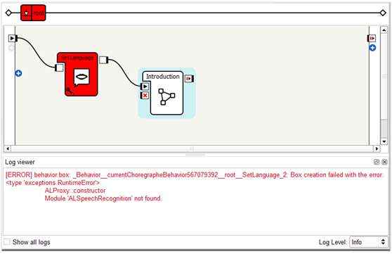
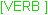
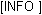
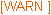
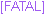

Log viewer¶
What is the Log viewer¶
The Log viewer enables you to debug your behavior by displaying messages coming from running Behaviors.
{kind=link}
Any message displayed includes:
- its Severity level,
- the Path of the box concerned by the message and
- the text of the message.
Note
A message with a debug severity level also contains the corresponding line number in the box script which is in brackets and then the name of the concerned method in the box script.
You can:
- define which events are logged (see section Defining which events are logged),
- edit log list (see section Editing log list).
Severity level¶
Each message can have a different level of severity which are displayed with different prefixes and in different colors:
Level of
Severity
|
Prefix | Description |
|---|---|---|
| debug | This is generally used to debug a very specific point in the behavior. | |
| verbose |  | These logs generally describe what is happening in the behavior step by step. |
| info |  | These logs are generally not essential but can be useful for someone else who would use your behavior. |
| warning |  | This is generally used to warn you about an important fact which does not threaten the smooth running of the behavior. |
| error | This is used for errors which does threaten the smooth running of the behavior. Note When an error is raised in a box, the specific box and all its parents get red in order to find the cause of the problem more easily. |
|
| fatal |  | This is not very used but you can use it for example for errors which surely make the behavior crash. |
Path of the box¶
The path of the box is contained in a string which looks like the following:
_Behavior_<behavior-id>__<box-path>
where:
<behavior-id>corresponds to the identification number of the behavior (which enables you to determine which behavior does the message come from).<box-path>corresponds to the path of the box which the message comes from.For example a box named
Childis in the diagram of a box namedParent.Parentis in the main diagram. The path ofChildshould look likeroot__Parent_2__Child_4.The numbers in the path enables to identify boxes that have the same name so that the path is unique for each box.
Defining which events are logged¶
By default, this panel displays only messages caused by running behaviors with info as a minimal level of severity. But you can even get all messages from NAOqi and NAOqi’s modules, and get messages from lower level of severity.
- To get all messages from NAOqi and NAOqi’s modules: check the checkbox Show all logs.
- To adjust the level of severity: use Log Level drop-list.
For example, if Error is selected as Log Level, messages displayed in the panel will be only the ones defined as fatal or error. In the same way, if Debug is selected, messages of any level will be displayed.
Warning
Selecting a very low level will result in having a lot of messages, possibly reducing the speed of the whole application.
Note
You should know that you can send messages yourself from the scripts of your own boxes. For more information, see the section: Built-in functions in the script of a box.
{kind=link}